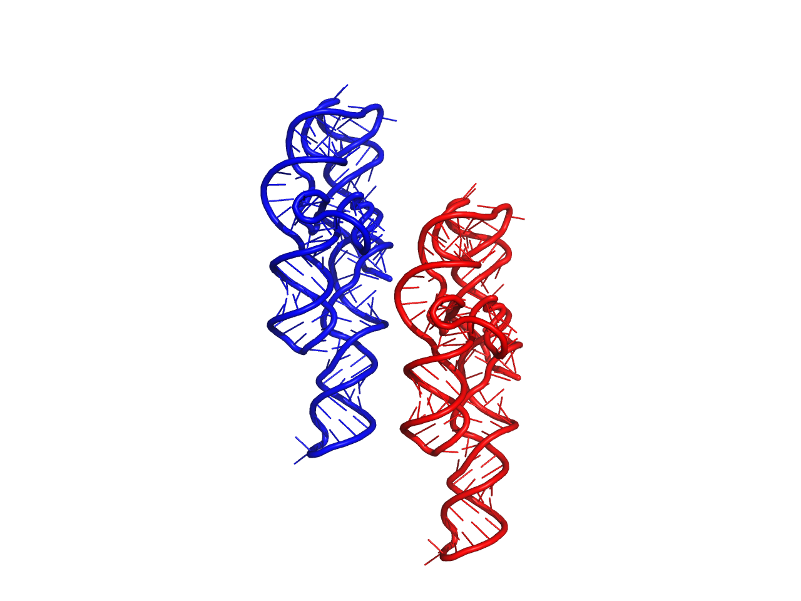
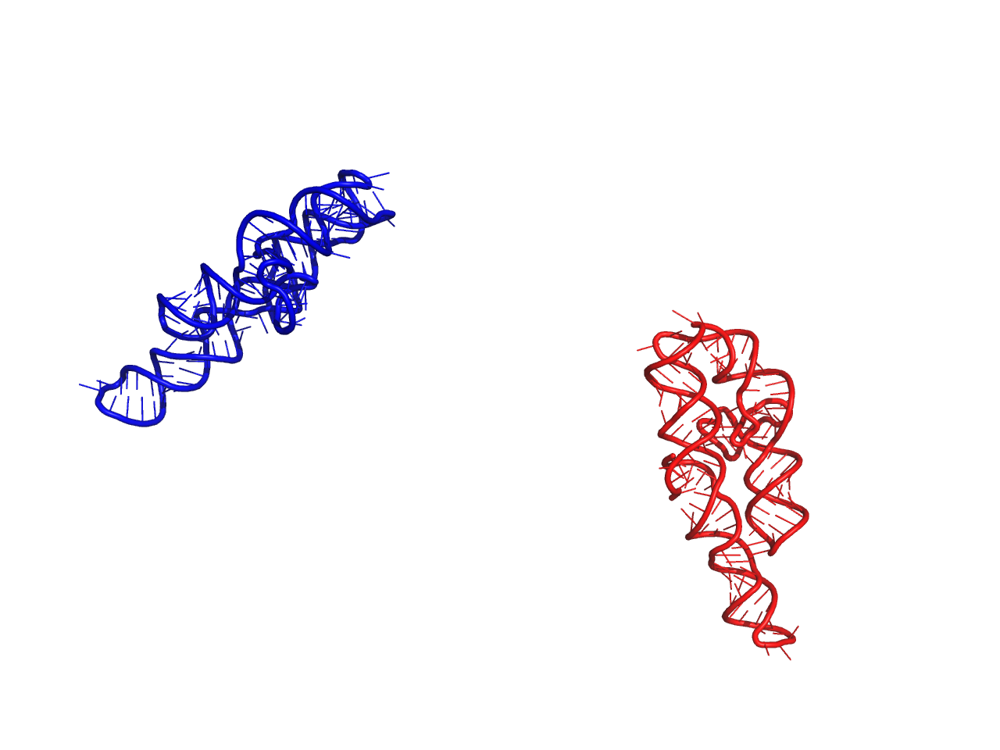

Structure¶
-
class
rnamake.structure.Structure(chains=None)[source]¶ Bases:
objectStores 3D structure information from a pdb file. Stores all chains, residues and atoms objects. Implementation is designed to be extremely lightweight and capable of performing fast transformations. to load a PDB formated file into a Structure object use
structure_from_pdb()Parameters: chains (list of chain.Chain objects) – chains that belong to this structure, optional Attributes: - chains : list of chain.Chain
- These chain belong to the current structure
Examples: # load structure from pdb formatted file >>> import rnamake.unittests.files >>> s = structure_from_pdb(rnamake.unittests.files.P4P6_PDB_PATH) # load structure from test instance >>> import rnamake.unittests.instances >>> s = rnamake.unittests.instances.structure() # get specific residue >>> r = s.get_residue(num=106) >>> print r <Residue('U106 chain A')> # get residue using its unique indentifer >>>s.get_residue(uuid=r.uuid) <Residue('U106 chain A')> >>> s.chains() [<Chain( First: <Residue('G103 chain A')> Last: <Residue('C260 chain A')> Size: 157)>] >>> len(s.get_beads()) 470 # exclude beads from first residue. This can be useful if you only # need sterics from a part of the structure >>> len(s.get_beads(excluded_res=[s.residues()[0]])) 468
-
atoms()[source]¶ Concats all Atom objects from all Residue objects intos a unified list to be able to easily iterate through.
Returns: List of Residue objects
-
copy()[source]¶ creates a deep copy of this structure
Returns: copy of Structure object Return type: Structure
-
get_beads(excluded_res=None)[source]¶ generates 3-bead model residue beads for all residues in current structure.
Parameters: excluded_res (List of Residue objects) – List of residue objects whose beads are not to be included. This is generally end residues that would instantly clash with residues they are being overlayed onto when performing motif aligning Returns: List of Bead objects Examples: # load structure from pdb formatted file >>> import rnamake.unittests.files >>> s = structure_from_pdb(rnamake.unittests.files.P4P6_PDB_PATH) >>> len(s.get_beads()) 470 >>> s.get_beads()[0] <Bead(btype='SUGAR', center='-24.027 -48.5001111111 86.368')> # exclude beads from first residue. This can be useful if you only # need sterics from a part of the structure >>> len(s.get_beads(excluded_res=[s.residues()[0]])) 468
-
get_residue(num=None, chain_id=None, i_code=None, uuid=None)[source]¶ find a residue based on residue num, chain_id, insert_code and uuid will return an error if more then one residue matches search to avoid confusion. Will return None is nothing matches search.
Parameters: - num (int) – residue number
- chain_id (str) – what chain the residue belongs to
- i_code (str) – the insertation code of the residue
- uuid (uuid) – the unique indentifier that each residue is given
Returns: Residue object
Return type: Examples: # load structure from pdb formatted file >>> import rnamake.unittests.files >>> s = structure_from_pdb(rnamake.unittests.files.P4P6_PDB_PATH) # get specific residue >>> r = s.get_residue(num=106) >>> print r <Residue('U106 chain A')> # get residue using its unique indentifer >>>s.get_residue(uuid=r.uuid) <Residue('U106 chain A')>
-
move(p)[source]¶ Moves atomic coordinates based on a specified translation. If you do not supply and np.array and instead give it a list it will not work!
Parameters: p (numpy.array) – Amount to 3D space to displace each atom Returns: None Examples: >>> import rnamake.unittests.instances >>> import numpy as np # print out original and moved structure of P4-P6 domain >>> s = rnamake.unittests.instances.structure() >>> s.to_pdb("org.pdb") >>> s.move(np.array([50, 0, 0])) >>> s.to_pdb("moved.pdb")
Result of example above, Red original, Blue moved.
-
residues()[source]¶ Concats all residue objects from all Chain objects intos a unified list to be able to easily iterate through.
Returns: List of Residue objects
-
to_pdb(fname='structure.pdb', renumber=-1)[source]¶ write structure to pdb file
Parameters: - fname (str) – name of the file of the pdb file you want to write to
- renumber (int) – what should the first residue be numbered. -1 is to NOT renumber, Default=-1.
Returns: None
-
to_pdb_str(renumber=-1)[source]¶ creates a PDB string formatted verision of this Structure object.
Parameters: renumber (int) – what should the first residue be numbered. -1 is to NOT renumber, Default=-1. Returns: str
-
transform(t)[source]¶ Transforms atomic coordinates based on a rotation and translation
Parameters: t (transform.Transformation) – Transformation to be performed on atoms Returns: None Examples: # load structure from test instance >>> import rnamake.unittests.instances >>> s = rnamake.unittests.instances.structure() >>> import rnamake.util >>> rnamake.util.center(s.atoms()) array([ -8.49624784, -59.88166488, 80.1866473 ]) # load indenity transform (no changes) >>> t = rnamake.unittests.instances.transform_indentity() >>> s.transform(t) >>> rnamake.util.center(s.atoms()) array([ -8.49624784, -59.88166488, 80.1866473 ]) # load random transform, write pdbs to disk >>> t = rnamake.unittests.instances.transform_random() >>> s.to_pdb("org.pdb") >>> s.transform(t) >>> s.to_pdb("transformed.pdb")
Result of example above, Red original, Blue transformed.